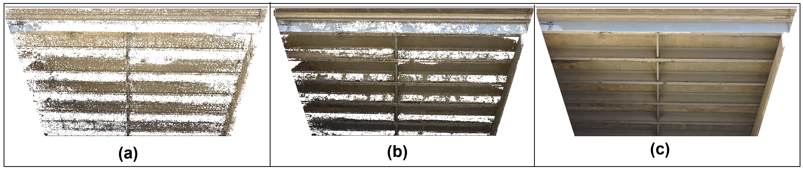
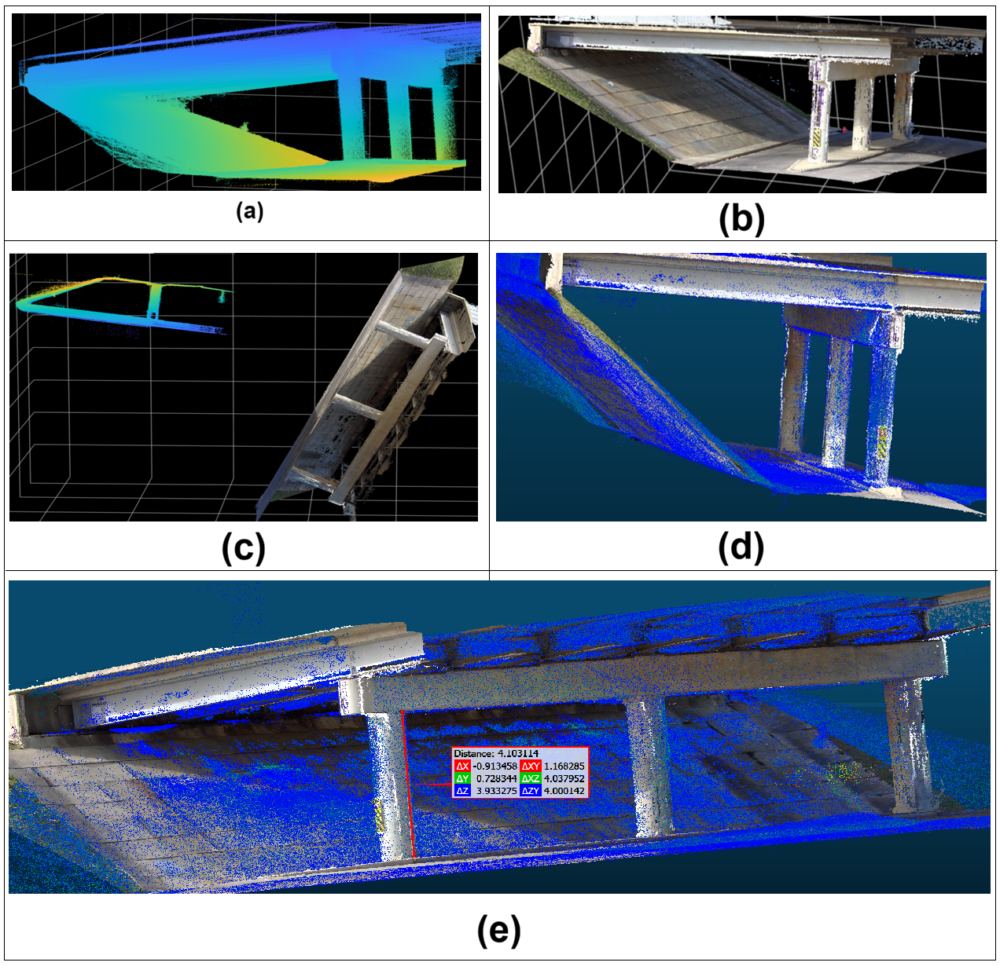

Portfolio
Fine-Detail 3D Bridge Digital Twin (Ongoing)
Objective:
Develop a high-fidelity digital twin of a bridge using UAV imagery, photogrammetry, and 3D reconstruction techniques including point cloud processing, dense mesh generation, and SfM-based pipelines.
Since GPS access is limited under the bridge, the RGB-based 3D model is first generated in a local coordinate system. The model is then aligned with LiDAR data to obtain real-world scale and accurate measurements.
The goal is to capture fine structural details that support automated detection of defects such as cracks, spalling, and corrosion, while enabling scalable bridge inspection, condition assessment, and long-term structural monitoring.
Tools & Methods: Python · OpenCV · Agisoft Metashape Professional · CloudCompare · LiDAR · RGB Camera · Point Cloud Processing · Photogrammetry · SfM · Sensor Fusion . Skydio2+ . Elios3

Figure 1. Photogrammetric reconstruction workflow illustrating the generation of a 3D model of the bridge deck and girders from UAV imagery.
(a)Tie point Cloud, (b)Dense pointcloud, (c) Final textured 3D mesh.

Figure 2. Large-scale 3D reconstruction of the bridge generated from UAV imagery.

Figure 3. Alignment of the RGB-derived 3D reconstruction with LiDAR data.
(a) LiDAR reference point cloud, (b) RGB dense point cloud, (c) RGB and LiDAR point clouds before alignment, (d) RGB and LiDAR point clouds after alignment
(e) Aligned RGB-LiDAR models enables real-scale bridge measurement (e.g., the pier height, measured from the pier cap to the ground, is approximately 4.1 m).